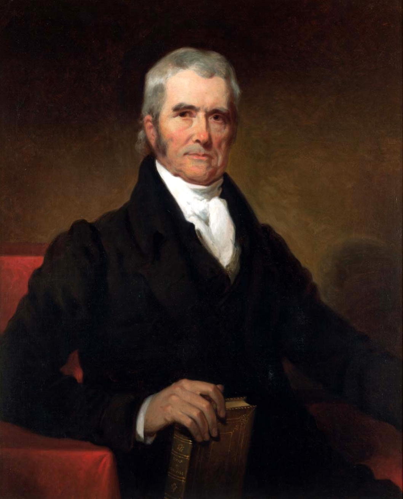

Directions: Work through the five stations in order. Each station holds one record of the years 1816 to 1824, quoted from the edition named in its Source line, with cuts marked by ellipses, or labeled as a teaching summary where the record is presented in that form. As you work, keep the ledger in Part 2: for each record, state whether it widens or narrows the national government's reach, and the constitutional ground it claims. At the end, judge whether the nationalism of these years was Hamilton's program fulfilled or a new thing built from the war's lessons, and defend the judgment from the documents.
Source: Chief Justice John Marshall, McCulloch v. Maryland, 1819, as carried in the audited source record (edition named in the record: Legal Information Institute, Cornell Law). Congress chartered the Second Bank of the United States in 1816. Maryland taxed the notes of its Baltimore branch, and the branch's cashier, James McCulloch, issued notes without paying the tax. Spelling follows the record. Cuts are marked by ellipses.

"We must never forget that it is a constitution we are expounding. ... This provision is made in a constitution, intended to endure for ages to come, and consequently, to be adapted to the various crises of human affairs. ... Let the end be legitimate, let it be within the scope of the constitution, and all means which are appropriate, which are plainly adapted to that end, which are not prohibited, but consist with the letter and spirit of the constitution, are constitutional."
"That the power to tax involves the power to destroy; that the power to destroy may defeat and render useless the power to create; that there is a plain repugnance in conferring on one government a power to control the constitutional measures of another, which other, with respect to those very measures, is declared to be supreme over that which exerts the control, are propositions not to be denied."
State the test Marshall gives for a claimed implied power, in his own sequence, and then state why the same opinion bars Maryland's tax. Note how the Constitution's intended lifespan does work in the argument. Then enter in the ledger whether this record widens or narrows the national government's reach, and on what ground.
Source: U.S. Supreme Court (Chief Justice John Marshall), Gibbons v. Ogden, 1824, as carried in the audited source record (edition named in the record: Justia). New York had granted an exclusive right to steamboat navigation in its waters. Aaron Ogden held the right for the route between New York and New Jersey, and Thomas Gibbons ran competing boats under a federal coasting license. Spelling follows the record. Cuts are marked by ellipses.
"Commerce, undoubtedly, is traffic, but it is something more: it is intercourse. It describes the commercial intercourse between nations, and parts of nations, in all its branches, and is regulated by prescribing rules for carrying on that intercourse."
"The subject to which the power is next applied is to commerce "among the several States." The word "among" means intermingled with. A thing which is among others is intermingled with them. Commerce among the States cannot stop at the external boundary line of each State, but may be introduced into the interior."
"It is the power to regulate, that is, to prescribe the rule by which commerce is to be governed. This power, like all others vested in Congress, is complete in itself, may be exercised to its utmost extent, and acknowledges no limitations other than are prescribed in the Constitution."
State what Marshall adds to the word commerce beyond traffic, where he says commerce among the states reaches and where it stops being a state line question, and what limit he places on Congress's power to regulate it. Then enter in the ledger whether this record widens or narrows the national government's reach, and on what ground.
Source: Henry Clay, Speaker of the House, speech on the tariff, March 30 and 31, 1824, as quoted in U.S. House of Representatives, History, Art and Archives, "The 1824 American System Speech" (the speech as printed in the Annals of Congress). Clay spoke for two days in support of a protective tariff bill. The passages below are quoted as the House history carries them.
"The object of the bill under consideration is to create this home market, and to lay the foundations of a genuine American policy."
"Are we doomed to behold our industry languish and decay yet more and more?"
"But there is a remedy, and that remedy consists in modifying our foreign policy, and in adopting a genuine AMERICAN SYSTEM."
State what Clay says the bill's object is, what condition he says American industry is in without it, and what remedy he names. Then connect the speech to the system as the lesson defines it: which part of the system is this speech defending, and which two parts stand behind it. Then enter in the ledger whether this record widens or narrows the national government's reach, and on what ground.
Source: James Madison, Veto Message, March 3, 1817 (Richardson, A Compilation of the Messages and Papers of the Presidents, vol. I, pp. 584-585; the Founders Online, National Archives, Madison papers carry the same passages of the message). The bill would have set apart the Second Bank's bonus payment and dividends as a fund for constructing roads and canals. Spelling follows the edition. Cuts are marked by ellipses.
"Having considered the bill this day presented to me entitled "An act to set apart and pledge certain funds for internal improvements," and which sets apart and pledges funds "for constructing roads and canals, and improving the navigation of water courses, in order to facilitate, promote, and give security to internal commerce among the several States, and to render more easy and less expensive the means and provisions for the common defense," I am constrained by the insuperable difficulty I feel in reconciling the bill with the Constitution of the United States to return it with that objection to the House of Representatives, in which it originated."
"The legislative powers vested in Congress are specified and enumerated in the eighth section of the first article of the Constitution, and it does not appear that the power proposed to be exercised by the bill is among the enumerated powers, or that it falls by any just interpretation within the power to make laws necessary and proper for carrying into execution those or other powers vested by the Constitution in the Government of the United States. ..."
"I am not unaware of the great importance of roads and canals and the improved navigation of water courses, and that a power in the National Legislature to provide for them might be exercised with signal advantage to the general prosperity. But seeing that such a power is not expressly given by the Constitution, and believing that it can not be deduced from any part of it without an inadmissible latitude of construction and a reliance on insufficient precedents; ... I have no option but to withhold my signature from it ..."
State the ground of the veto in Madison's own sequence: where Congress's powers are listed, what does not appear there, and what the necessary and proper power cannot be stretched to cover. Then state what Madison concedes about roads and canals, and why the concession makes the veto stronger rather than weaker as an argument. Then enter in the ledger whether this record widens or narrows the national government's reach, and on what ground.
Source: Teaching summary written for this lesson from the public record, labeled as a summary. No sentence in this station is presented as a period quotation.
After the war, European demand held American cotton prices high, and western land sold at rising prices to buyers who paid on credit. State banks multiplied and issued paper notes to feed the buying, and the Second Bank of the United States, under its first president, William Jones, at first let its own branches lend freely in the West and South. In 1818 and 1819 world cotton prices fell sharply. The Second Bank, its specie reserves strained, reversed course under Jones and then under his successor, Langdon Cheves: it called in loans, demanded payment in specie, and pressed state banks to redeem their notes. State banks that could not pay failed. Land values collapsed, the Bank foreclosed on farms and town lots across the West, and in the cities merchants failed and workers lost employment, in the first great peacetime depression the country had known. State legislatures answered with relief laws and stay laws for debtors. The Bank survived and steadied the currency by the middle of the 1820s, and it kept the resentment its contraction had earned: for a generation of western debtors, the national bank was the creditor that had taken the farm.
State the chain from the cotton boom to the foreclosures, naming the Second Bank's part in both the lending and the contraction, and then state what the panic did to the politics of the American System's first part. Then enter in the ledger whether this record widens or narrows the national government's reach, and on what ground.
| Station | Widens or narrows the reach | Constitutional ground it claims |
|---|---|---|
| 1. McCulloch | ||
| 2. Gibbons | ||
| 3. Clay's speech | ||
| 4. Madison's veto | ||
| 5. The Panic of 1819 |
Was the nationalism of 1816 to 1824 Hamilton's program fulfilled, or a new thing built from the war's lessons? Answer in a developed paragraph. Use at least three stations, weigh the widest widening in the file against the veto that stopped the building, and answer the strongest claim for a different verdict in one or two sentences.
Station 1. Marshall's test runs in sequence: let the end be legitimate and within the scope of the Constitution, and all means which are appropriate, which are plainly adapted to that end, which are not prohibited, and which consist with the letter and spirit of the Constitution, are constitutional. The Bank passes the test as a means to the listed ends of taxing, borrowing, and regulating commerce. The lifespan sentence does the framing work: a constitution intended to endure for ages to come, and to be adapted to the various crises of human affairs, cannot list every means in advance, so the means must be inferred from the ends. Maryland's tax fails for the opposite reason: the power to tax involves the power to destroy, and a state may not use that power against an instrument of a government declared supreme in its sphere. Widens, on the ground of implied powers read from the document's great ends. (Blueprint 12)
Station 2. Marshall adds intercourse to traffic: commerce describes commercial intercourse between nations and parts of nations in all its branches, and it includes navigation, because a system for regulating commerce that excluded navigation would be, in the opinion's reasoning, scarcely conceivable. Commerce among the states means commerce intermingled with the states; it cannot stop at the external boundary line of each state but may be introduced into the interior, though the opinion reserves commerce completely internal to one state. The power to regulate is the power to prescribe the rule by which commerce is governed, complete in itself, exercisable to its utmost extent, limited only by the Constitution. On those grounds the New York monopoly, colliding with Gibbons's federal coasting license, fell. Widens, on the ground of a broad commerce power and federal supremacy within it. (Blueprint 12)
Station 3. Clay states the bill's object as creating a home market and laying the foundations of a genuine American policy. Without it, industry is left to languish and decay. The remedy is to modify the country's foreign policy and adopt a genuine American System, naturalizing the arts at home by adequate protection. The speech defends the system's second part, the protective tariff. Standing behind it are the first part, the national bank chartered in 1816 to order the currency and credit, and the third, internal improvements, which the tariff's revenue was to fund and which Station 4 shows being stopped. Widens, on the ground that national legislation, not foreign demand, should set the terms of the home market. (Blueprint 11)
Station 4. Madison's sequence: the legislative powers vested in Congress are specified and enumerated in the eighth section of the first article; the power to construct roads and canals does not appear among the enumerated powers; and it does not fall by any just interpretation within the power to make laws necessary and proper for carrying the listed powers into execution. Reaching it would require an inadmissible latitude of construction. The concession is full: Madison is not unaware of the great importance of roads and canals, and grants that a power in the national legislature to provide for them might be exercised with signal advantage to the general prosperity. The concession strengthens the veto because it removes policy from the dispute: the president who agrees the work is needed still withholds his signature, which isolates the constitutional ground as the whole argument. Narrows, on the ground of enumerated powers and amendment as the only remedy. (Blueprint 11)
Station 5. The chain: wartime and postwar cotton prices floated a western land boom bought on credit; state banks multiplied their notes and the Second Bank's branches at first lent freely; cotton prices fell in 1818 and 1819; the Bank, under Jones and then Cheves, called in loans, demanded specie, and pressed state banks to redeem; banks failed, land values collapsed, and the Bank foreclosed across the West while city workers lost employment. The politics: the American System's first part, the Bank, survived as an institution and steadied the currency, but it spent its public standing in the West, where bank became a creditor's name. A program sold as binding the sections together had, in its first crisis, bound the West to the Bank as debtor to collector. Narrows in practice, whatever the charter said: the reach continued, the consent under it thinned. (Blueprint 11)
The verdict. Full credit requires a judgment, three stations used accurately, the widest widening weighed against the veto, and a rival verdict answered. The fulfilled case: the bank, the tariff, and the broad Constitution are Hamilton's own instruments, and Marshall's McCulloch test (Station 1) is Hamilton's bank argument of 1791 written into law, with Madison himself signing the charter in 1816. The new thing case: the men who built it were Hamilton's opponents, acting on lessons Hamilton never faced, a war fought without a bank, a currency in disorder, troops delayed on bad roads; Clay's home market logic (Station 3) and the Court's commerce doctrine (Station 2) answer an industrial and steamboat economy of the 1820s, not the funding problems of 1791; and the same generation that built it stopped its third part at the veto (Station 4) and paid for its first part in the panic (Station 5). The strongest answers usually hold both: the instruments were Hamilton's, the builders, the reasons, and the limits were the war generation's own.